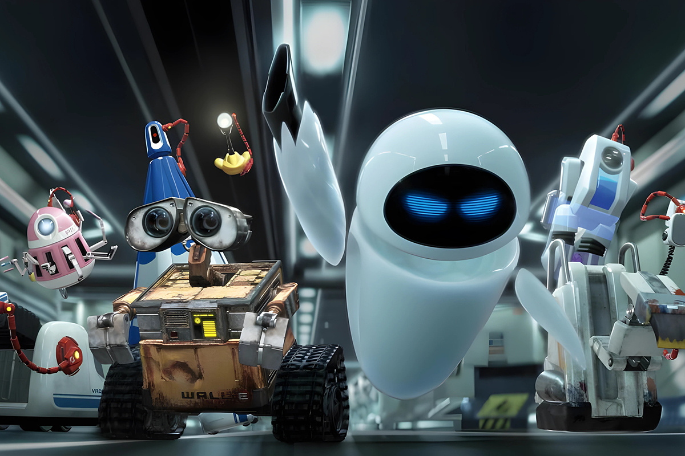

Una universidad solo para robots
Sí, como leíste...
Sí, como leíste...

Seguro has escuchado más de una vez la frase: “Los robots dominarán el mundo”. Y aunque no sabemos realmente qué nos depara el futuro, lo que sí es un hecho es que estamos avanzando a pasos agigantados hacia esa dirección.
¿Estoy exagerando? Tal vez. ¿O quizás no?
Lo cierto es que hoy te traemos una noticia que parece sacada de una película de ciencia ficción, pero que queramos o no, es completamente real.
En China, se inauguró recientemente el primer campo de entrenamiento exclusivo para robots, con el objetivo de capacitar a hasta 1.000 de ellos para el año 2027. Sí, leíste bien. Un espacio diseñado especialmente para que estas máquinas aprendan nuevas habilidades y se preparen para su integración en la sociedad.

Para ponerlo en perspectiva, imagina esto:
Ahora, lo que realmente nos interesa de este tipo de noticias no es solo la tecnología en sí, sino cómo afectará a nuestra sociedad.
La automatización de tareas que antes requerían de seres humanos podría transformar radicalmente el mercado laboral, desplazando ciertos empleos tradicionales mientras crea nuevas oportunidades en sectores tecnológicos. Sin embargo, el impacto no se limita solo al ámbito laboral. También influirá en nuestra interacción diaria con estas máquinas, desafiando nuestras nociones de confianza, privacidad y dependencia de la inteligencia artificial.
¿Estamos preparados para convivir con robots en roles esenciales como la educación, la salud o incluso la seguridad pública? Además, la aceptación de los robots en la sociedad traerá consigo debates sobre regulaciones, derechos y la necesidad de una adaptación ética que garantice su uso responsable.
China ya está tomando la delantera en esta revolución, y sería interesante ver cómo enfrentarán los desafíos que surjan en el camino.
Y tú, ¿cómo te sentirías compitiendo con un robot en una entrevista de trabajo?
 Tecnología
TecnologíaSi eres como yo y revisas TikTok e Instagram constantemente, te habrás dado cuenta de que estas redes son casi como un experimento social.
 Tecnología
TecnologíaHablamos mucho de inteligencia artificial. La tenemos integrada en nuestra vida, nos ayuda en nuestros trabajos y le preguntamos cosas de…
 Tecnología
TecnologíaDurante años hemos pensado en la inteligencia artificial como algo súper frío: servidores gigantes, computadores procesando datos y…